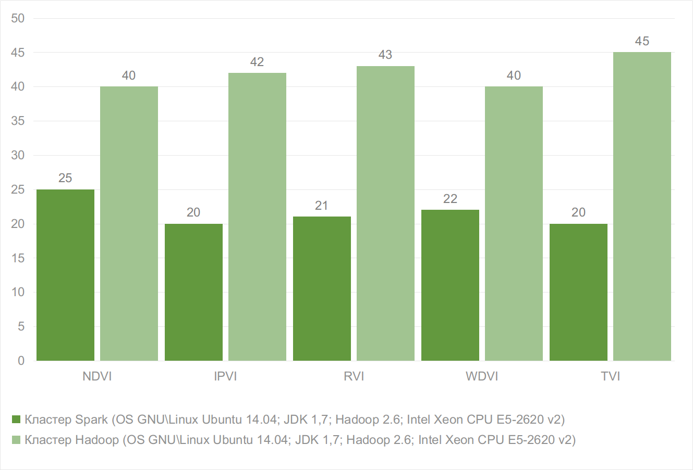

Your browser doesn't support the features required by impress.js, so you are presented with a simplified version of this presentation.
For the best experience please use the latest Chrome, Safari or Firefox browser.
ФЕДЕРАЛЬНОЕ ГОСУДАРСТВЕННОЕ БЮДЖЕТНОЕ УЧРЕЖДЕНИЕ НАУКИ
ИНСТИТУТ ВЫЧИСЛИТЕЛЬНЫХ ТЕХНОЛОГИЙ
СИБИРСКОГО ОТДЕЛЕНИЯ РОССИЙСКОЙ АКАДЕМИИ НАУК
КЕМЕРОВСКИЙ ФИЛИАЛ (КФ ИВТ СО РАН)
АЛГОРИТМ НА БАЗЕ ПАРАДИГМЫ MAPREDUCE ДЛЯ ВЫСОКОПРОИЗВОДИТЕЛЬНОЙ ОБРАБОТКИ
СПУТНИКОВЫХ
СПЕКТРАЛЬНЫХ ИЗОБРАЖЕНИЙ
Катастрофический рост объемов информации в различнх сферах жизнидеятености таких как
| № | Разновидность вегетационногоиндекса (ВИ) | Формула и краткое описание |
| 1. | Относительный ВИ (Ratio VI, RVI, Simple Ratio (SR)) |
$$RVI\eqby{}\frac{\rho_{NIR}}{\rho_{RED}}$$ |
| 2. | Нормализованный разностный ВИ (Normalized Difference VI, NDVI) |
$$NDVI\eqby{}\frac{{\rho_{NIR}}-{\rho_{RED}}}{{\rho_{NIR}}+{\rho_{RED}}}$$ |
| 3. | Трансформированный вегета- ционный индекс (Transformed Vegetation Index TVI) |
$$TVI\eqby{}\sqrt{NDVI+0.5}$$ |
| 4. | Инфракрасный вегетационный индекс (Infrared Percentage VI, IPVI) |
$$IPVI\eqby{}\frac{{\rho_{NIR}}}{{\rho_{NIR}}+{\rho_{RED}}}$$ |
| 5. | Разностный вегетационный индекс (Difference VI, DVI) |
$$DVI\eqby{}{\rho_{NIR}}-{\rho_{RED}}$$ |
| № | Канал | ETM+-сенсор | Пространственное разрешение ETM+- сенсора, м |
|---|---|---|---|
| 1. | Band_1 (Blue) | 0,45-0,52 | 30 |
| 2. | Band_2 (Green) | 0,53-0,61 | 30 |
| 3. | Band_3 (Red) | 0,63-0,69 | 30 |
| 4. | Band_4 (NIR) | 0,75-0,9 | 30 |
| 5. | Band_5 (SWIR-1) | 1,55-1,75 | 30 |
| 6. | Band_6 (TIR) | 10,4-12,5 | 60 |
| 7. | Band_7 (SWIR-2) | 2,1-2,35 | 30 |
| 8. | Band_8 (Pan) | 0,52-0,9 | 15 |
7
8
Спасибо за внимание